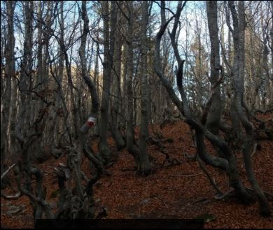
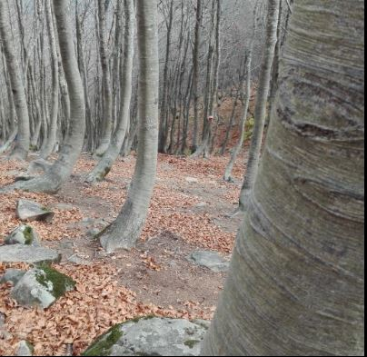

Alberi contorti
Nelle zone battute da forti venti dominanti gli alberi in posizione esposta (ad es. le piante isolate oppure al margine del bosco) presentano chiome fortemente asimmetriche e fusto inclinato e curvato. Altre volte le sfavoreli condizioni climatiche, combinate spesso con particolari predispozioni genetiche, portano l’albero ad assumere portamenti prostrati, o addirittura striscianti, con più fusti che partono dallo stesso ceppo (ad es. il Pino mugo, al limite superiore della vegetazione arborea).
Gli alberi contorti della foto hanno, come suggerisce il nome, assunto, a causa delle condizioni climatiche (quali vento e gelo) una forma non regolare, detta, appunto, contorta e sono caratterizzati da taglia bassa. Questi faggi, cresciuti ad una quota vicina al limite loro consentito, possono così resistere più facilmente alle difficilissime condizioni ambientali che l’inverno porta a queste quote.

Sciabolatura
Tipicamente un albero cresce in posizione verticale, con il fusto praticamente rettilineo. Altre volte la deviazione del fusto viene indotta da particolari condizioni ambientali: tipico è il caso degli alberi cresciuti in montagna su pendici piuttosto acclivi, i quali presentano un’evidente curvatura della porzione basale del fusto, con la convessità rivolta verso valle.
Tale anomalia prende il nome di sciabolatura ed è causata dalla reazione della pianta, che tende a orientare nuovamente la propria crescita in direzione verticale dopo che il lento e costante scorrimento del manto nevoso ha piegato il giovane fusto. Nella foto la faggeta sull’ultimo pendio ripido prima del Lago Nero. La sciabolatura si riscontra talvolta anche in fusti cresciuti in piano, come ad esempio nei polloni di castagno; in questo caso la curvatura basale del fusto è dovuta alla modalità di ricaccio della ceppaia.